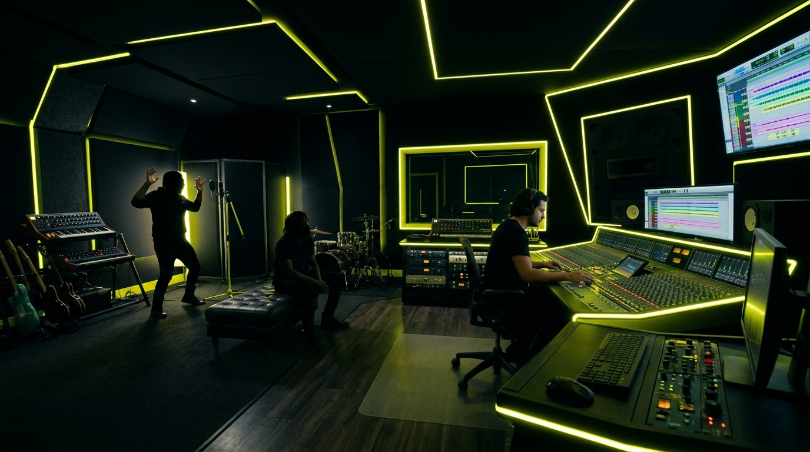

Creating music is a journey, but sometimes, the real magic happens before the beat even drops.
I’ve had the privilege of working with Shaun Perera and Shane Vincent individually—both in the studio and tearing it up on stage. But bringing these two uniquely talented forces together in front of a recording for the first time? That was an entirely different vibe.
The Initial Vibe Check
The moment I showed them the track, the hook, and the title for "J Walking", the connection was instant. But their reactions? Completely opposite, and absolutely hilarious.
Shaun immediately drifted into a deep, spiritual, peace-and-love headspace. He was feeling the frequencies, breaking down the energy of the track, and talking about cosmic alignment.
Meanwhile, Shane? Shane heard the beat and his immediate response was just pure, unfiltered energy: "Rebelliooooonn!" 😂
Tripping on Their Own Energy
The chemistry in the room was undeniable. Because they were both fully in their element and bouncing off each other's completely different wavelengths, it turned into an unforgettable session. They were tripping on their own thoughts, and I just had to sit back, hit record, and let them be them.
It’s one thing to see artists perform, but it’s another to see them just vibing, completely unguarded.
The Illuminati Discussion
At one point, the conversation went completely off the rails in the best way possible. What started as a studio session quickly spiraled into a deep, hilarious discussion about the Illuminati.
Check out the recording below to see exactly what I mean:
A discussion between Shaun and Shane about the Illuminati...
What’s Next?
"J Walking" is going to be something special. The track will be dropping soon on all major streaming platforms. Stay tuned for more updates, behind-the-scenes content, and the official release date.
Join the Yelo Studio Community: Want to be the first to know when the track drops and get exclusive behind-the-scenes looks into the creative process? Join the free newsletter to stay updated on all upcoming releases and production insights.